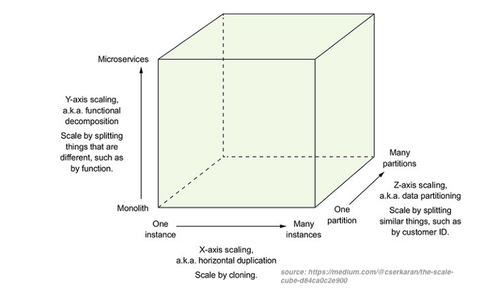

#META_LECTURE#: #TITLE#
•
•
•
•
Modified: #LAST_MODIFIED#
Humla v#HUMLA_VERSION#
Service Definition
Basic Entities
Agent
software or hardware that sends/receives messages
concrete implementation of a service
Service interface
abstract set of functionality and behavior
two different agents may realize the same service
Provider
owner (person or organization) that provides an agent realizing a service
also called a service provider
Requester
a person or organization that wishes to make use of a provider's service
uses a requester's agent to exchange messages with provider's agent
Interaction of Entities
Service
Difficult to agree on one definition
Business definition view
A service realizes an effect that brings a business value to a service consumer
for example, to pay for and deliver a book
Conceptual definition view
service characteristics
encapsulation, reusability, loose coupling, contracting, abstraction, discoverability, composability
Logical definition view
service interface, description and implementation
message-oriented and resource-oriented
Software architecture view
business service (also application service)
external, exposed functionality of an application
middleware service
internal/technical, supports processing of requests
Interface, Description and Implementation
Terminology clarification
service ~ service interface + service implementation
WSDL service ~ service description in WSDL language
SOAP service ~ a service interface is possible to access through SOAP protocol; there is a WSDL description usually available too.
REST/RESTful service ~ service interface that conforms to REST architectural style and HTTP protocol
Microservice ~ a set of services that realize an app's capability
Service Interface
Service interface components
Data
Data model definition used by the service
for example, input and output messages, representation of resources
Functions
operations and input and output data used by operations
Process
public process: how to consume the service's functionality
Technical
security, usage aspects (SLA-Service Level Agreement)
other technical details such as IP addresses, ports, protocols, etc.
Public Process
A state diagram
operation of a service defines a
state transition
between two states.
Service Characteristics
Integrating Applications
Integration and Interoperability
Integration
A process of connecting applications so that they can exchange and share capabilities, that is — information and functionalities.
Includes methodological approaches as well as technologies
Interoperability
Ability of two or more applications to understand each other
Interoperability levels
Data – syntax/structure and semantics
Functions/Processes – syntax and semantics
Technical aspects – protocols, network addresses, etc.
Service Oriented Architecture
SOA supports two core business strategies
Growing top-line revenue
Enterprise reacts quickly to requirements from the market
Business processes can be reconfigured rather than reimplemented
Improving bottom-line profit
Saving development costs by resuing existing services
Pre-integrated solutions
Out-of-the-box applications and integration solutions among them
One-to-One Service Integration
Direct integration of applications
Multiple protocols problem, multiple vendor problem
Replication of integration functionalities such as interoperability solutions
Many-to-Many Service Integration
Enterprise Service Bus – central integration technology
Realizes so called Service Oriented Architecture (SOA)
Contains various integration components such as process server, mediators, messaging middleware, identity management, etc.
Integration Approaches Overview
Data-oriented Integration
Third-party database access
Application D accesses a database of application B directly by using SQL and a knowledge of database B structure and constraints
In the past: monolithic and two-tier client/server architectures
Today: ETL (Extract, Transform, Load) technologies
Problems
App D must understand complex structures and constraints
Data – very complex, includes structure and integrity constraints
Functions/processes – hidden in integrity constraints
Technical – access mechanisms can vary
Service-oriented Integration
Integration at the application layer
Application exposes services that other applications consume
Services hide implementation details but only define interfaces for integration
Problems
Can become unmanageable if not properly designed
Interoperability
Data – limited to input and output messages only
Functions/processes – limited to semantics of services
Technical – access mechanisms can vary
Integration and Types of Data
Real-time data – Web services
Service-oriented integration
online, realtime communication between a client and a service
Usually small data and small amount of service invocation in a process
Bulk data – ETL
Data-oriented integration
processing of large amount of data in batches
Sometimes required for reconciliation across apps
when real-time integration fails and there is poor error handling
SOA provides both Web service and ETL capabilities
Enterprise Service Bus
Enterprise Service Bus
ESB is a central intermediary in SOA
Types of services: shared and infrastructure
Types of processes: Technical and Business
ESB Application
Application running on an application server
Exposes functionality via Web service interface
Allows to communicate with various messaging protocols
Integration Patterns
Technical-level interoperability – message broker
Location transparency
Dynamic routing
Data transformations – mediator
Session pooling
Message enrichment
Service Types
ESB services
shared services – created for particular domain
infrastructure services – support integration and interoperability
Integration Patterns
Integration Patterns
Applied in implementation of business services and processes
Usually a combination of more patterns
Technical patterns
Deals with technical aspects of service communication
Message broker – technical-level interoperability
Location transparency
Session pooling
Business patterns
Deals with business aspects (message content) of service communication
Dynamic routing
Data transformations – mediator
Message enrichment
Message Broker
Message broker
ESB can mix and match transports both standard and proprietary
Location Transparency
Location transparency
ESB can hide changes in location of services
Such changes will not affect clients
Can also be used for load balancing for multiple service instances
Session Pooling
Session Pooling
ESB can maintain a pool of connections (session tokens) to a back-end app when creating a new connection is expensive
A single session token can be reused by multiple instances of business processes
Dynamic Routing
Dynamic routing
ESB exposes a service that routes to various back-end services based on message contents.
Message Enrichment
Message enrichmenet
Enriches a message before invoking back-end application service.
Data Transformation
Data transformation phases:
Definition of mapping and execution of mappings
Definition of mappings (design-time)
A mapping associates one data structure to another data structure and defines a conversion between them.
Mapping languages
graphical for design that translates to XSLT, XQuery
Sometimes implemented in 3rd gen. languages (e.g., Java)
Execution of mappings (runtime)
application of mappings to instance data
CDM terminology
Application Business Message – back-end app format
Enterprise Business Message – CDM format
Key Mapping
What is key mapping
Key = identifier of en entity in a back-end application
Key Mapping = a mapping of an ID of an entity in one system to an ID of the same entity in another system.
Key mapping is realized using universal IDs (UID)
Example
A customer MOON exists in CRM and OMS systems
In CRM system, MOON has an
CRM-ID=AB1
In OMS system, MOON has an
CRM-ID=45A
Key mappig allows to map the
CRM-ID AB1
to the
OMS-ID 45A
Key mapping is a table
CRM-ID → UID → OMS-ID
Key Mapping Example
Microservices Architecture
The Scale Cube
Three-dimensional scalability model
X-Axis scaling requests across multiple instances
Y-Axis scaling decomposes an application into micro-services
Z-Axis scaling requests across "data partitioned" instances

Overview
Emerging software architecture
monolithic vs. decoupled applications
applications as independenly deployable services
Major Characteristics
Loosely coupled
Integrated using well-defined interfaces
Technology-agnostic protocols
HTTP, they use REST architecture
Independently deployable and easy to replace
A change in small part requires to redeploy only that part
Organized around capabilities
such as accounting, billing, recommendation, etc.
Impplemented using different technologies
polyglot – programming languages, databases
Owned by a small team